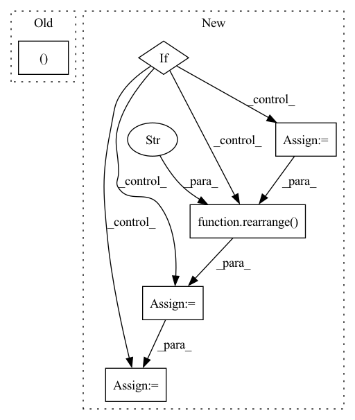

Pattern ID :1927
Before Change
if not self.use_pre_downsample:
x = self.downsample(x)
return x, skips
class UpsampleBlock(nn.Module):
def __init__(After Change
// Compute scale and shift from time_context
scale_shift = None
if exists(self.to_time_embedding) and exists(time_context):
time_embedding = self.to_time_embedding(time_context)
time_embedding = rearrange( time_embedding, "b c -> b c 1" )
scale_shift = time_embedding.chunk(2, dim=1)
h = self.block2(h, scale_shift=scale_shift)
In pattern: SUPERPATTERN
Frequency: 3
Non-data size: 6
Instances Fragment ID: 13414104
Project Name: archinetai/audio-diffusion-pytorch
Commit Name: c6edef1c655542c2bf6a2200ecdf3b4128c01e61
Time: 2022-07-13
Author: flavio.schneider.97@gmail.com
File Name: audio_diffusion_pytorch/unet.py
M Class Name: DownsampleBlock
N Class Name: ResnetBlock1d
M Method Name: forward(3)
N Method Name: forward(3)
M Parent Class: nn.Module
N Parent Class: nn.Module
M File Name: audio_diffusion_pytorch/unet.py
N File Name: audio_diffusion_pytorch/unet.py
M Start Line: 453
M End Line: 468
N Start Line: 163
N End Line: 174
Before Change
x,
convolve_across_time = True
):
b, c, *_, h, w = x.shape
is_video = x.ndim == 5
convolve_across_time &= is_videoAfter Change
):
scale_shift = None
if exists(self.time_mlp) and exists(time_emb):
time_emb = self.time_mlp(time_emb)
time_emb = rearrange( time_emb, "b c -> b c 1 1" )
scale_shift = time_emb.chunk(2, dim = 1)
h = self.block1(x, scale_shift = scale_shift, convolve_across_time = convolve_across_time)
Fragment ID: 13414105
Project Name: lucidrains/make-a-video-pytorch
Commit Name: 0af63d7db1964f26183becb09f25cd09c40ffbf5
Time: 2022-12-09
Author: lucidrains@gmail.com
File Name: make_a_video_pytorch/make_a_video.py
M Class Name: Pseudo3DConv
N Class Name: ResnetBlock
M Method Name: forward(4)
N Method Name: forward(3)
M Parent Class: nn.Module
N Parent Class: nn.Module
M File Name: make_a_video_pytorch/make_a_video.py
N File Name: make_a_video_pytorch/make_a_video.py
M Start Line: 93
M End Line: 115
N Start Line: 239
N End Line: 253
Before Change
x = self.attn(x, mask = mask) + x
x = self.ff(x) + x
return x, self.to_halt_logits(x)
class PonderTransformer(nn.Module):
def __init__(
self,After Change
x = self.attn(x, mask = mask) + x
x = self.ff(x) + x
if self.causal:
denom = torch.arange(x.shape[-2], device = x.device)
denom = rearrange( denom, "n -> () n ()" )
halt_input = x.cumsum(dim = -1) / (denom + 1)
else:
halt_input = x
Fragment ID: 13414102
Project Name: lucidrains/ponder-transformer
Commit Name: f59d217fdff56d2b71302ef65bcd8522f3d34c9e
Time: 2021-08-26
Author: lucidrains@gmail.com
File Name: ponder_transformer/ponder_transformer.py
M Class Name: Block
N Class Name: Block
M Method Name: forward(3)
N Method Name: forward(3)
M Parent Class: nn.Module
N Parent Class: nn.Module
M File Name: ponder_transformer/ponder_transformer.py
N File Name: ponder_transformer/ponder_transformer.py
M Start Line: 108
M End Line: 110
N Start Line: 108
N End Line: 119